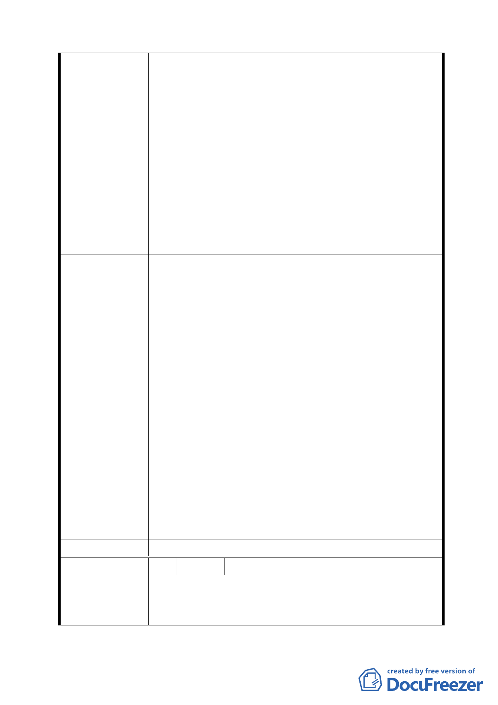

建議辦法
委員會決議
編號
陳情理由
年社區蓬勃發展之始，便承擔起關懷弱勢之重責
大任至今，如今若再增設同一類型的養護機構，
其設施密度已達本市之冠，實有違責任分攤之 公
平正義原則。何況行政區的發展應多元化，唯有
多元化才能使社區發展可長可久，市府若一意孤
行，不免讓本里居民對於市府看待本里之發展定
位多所聯想。
（三）民主社會，政府對於權力來源之人民團體應扮演
良善管理者之角色，論語季氏篇有云：「有國有家
者，不患寡而患不均」主政者不應只汲汲營營於施
政的表象數據，而忽略了探求數據背後所隱藏的真
正公理正義與價值。
一、避免抽離式與集中式的機構化安置剝奪身心障礙者
追求真正社區本位安置的權利，造成就養者與社區居
民彼此情感的衝突。
二、於各行政區普設社區型之照護機構，使有就養需求
者均能就近於自身早已就熟識的環境中，在既有的人
際網絡及社會文化的條件下享有優質的復健。
三、本里已有同類型的養護機構多所，對於應盡的社會
義務早已承擔多年，不宜再增設同類型的安置機構，
以免造成社區發展僵化。
四、文山區雖有運動中心之設置，但規模較小且地處偏
遠，對於多數文山區居民而言，儼然是閒置設施。若
能將該用地規劃為文山區第二運動中心，不僅能活絡
社區的發展，方便的交通結合本區特有的山水美景及
河濱自行車道，相信能吸引更多的市民前往使用。另
本區接近動物園段之河濱運動公園，擁有多處棒壘球
場地急棒壘運動人口，若能於運動中心內規劃頂樓作
為棒壘球打擊場，將是本市一大創舉。
同編號 1。
4 陳情人 永安國民小學家長會(中山區培英市場)
一、永安國小學生 1500 人，無活動中心，雨天上體育課
或辦理大型集會，常因缺乏場地無法進行。
二、游泳課須穿越大馬路或冒雨行走到大直國小游泳池
- 10 -